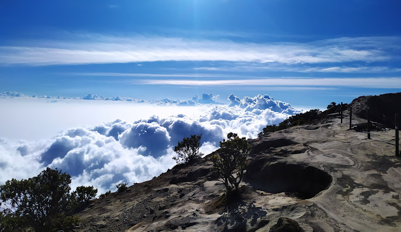
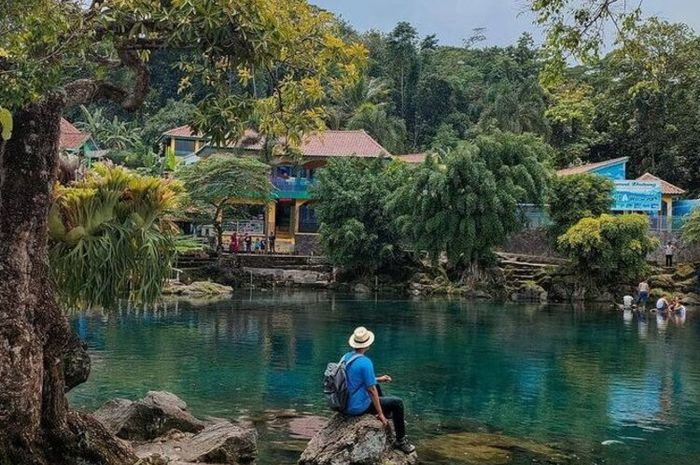
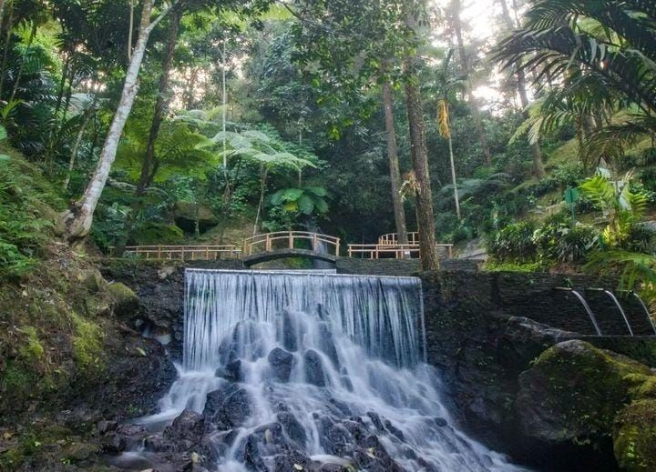
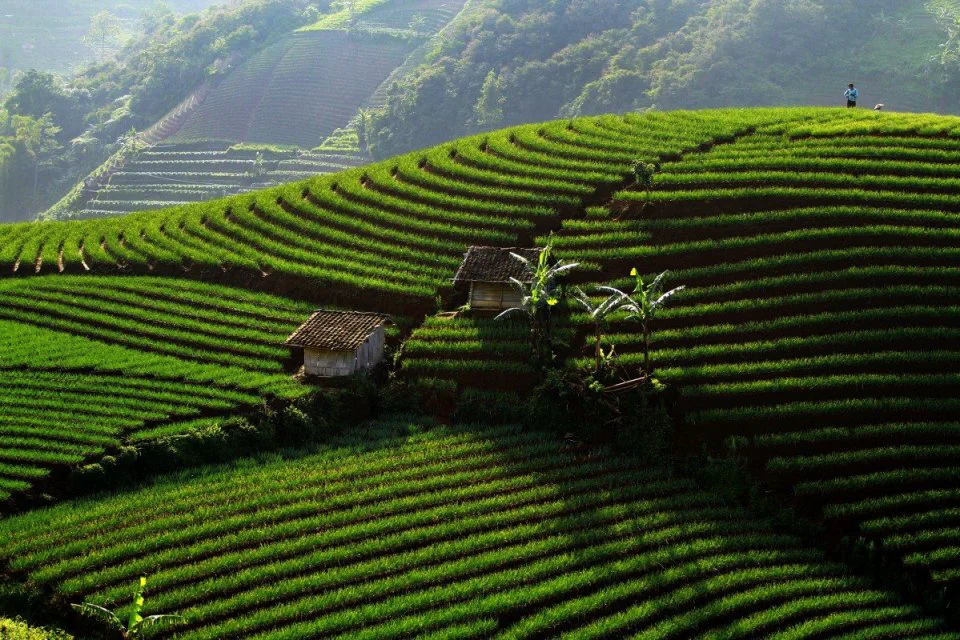

Sejarah

Pada zaman kerajaan Hindu-Buddha sampai dengan abad ke-15, di wilayah Kabupaten Majalengka terbagi menjadi 4 kerajaan:
Kerajaan Talaga Manggung dipimpin oleh Sunan Corenda atau lebih dikenal dengan sebutan Sunan Parung
Kerajaan Rajagaluh dipimpin oleh Prabu Cakraningrat
Kerajaan Sindangkasih, dipimpin oleh seorang puteri bernama Nyi Rambut Kasih
Kerajaan Wanayasa, dipimipin oleh Prabu Wirapati
Terdapat banyak cerita rakyat tentang ke-3 kerajaan tersebut yang sampai dengan saat ini masih hidup di kalangan masyarakat Majalengka.
Selain cerita rakyat yang masih diyakini juga terdapat situs, makam-makam dan benda-benda purbakala,
yang kesemuanya itu selain menjadi kekayaan daerah juga dapat digunakan sebagai sumber sejarah
Geografis

Secara geografis Kabupaten Majalengka terletak di bagian timur Provinsi Jawa Barat.
Kabupaten Majalengka terletak pada titik koordinat yaitu Sebelah Barat 108° 03'–108° 19 Bujur Timur,
Sebelah Timur 108° 12'–108° 25 Bujur Timur,
Sebelah Utara 6° 36'–5°58 Lintang Selatan dan Sebelah Selatan 6° 43'–7°44
Bagian utara wilayah kabupaten ini adalah dataran rendah, sedang di bagian selatan berupa pegunungan.
Gunung Ciremai (3.076 m) berada di bagian timur, yakni di perbatasan dengan Kabupaten Kuningan.
Gunung ini adalah gunung tertinggi di Provinsi Jawa Barat, dan merupakan taman nasional,
dengan nama Taman Nasional Gunung Ciremai
Keadaan geografi khususnya morfologi dan fisiografi wilayah Kabupaten Majalengka sangat bervariasi dan dipengaruhi oleh perbedaan ketinggian suatu daerah dengan daerah lainnya, dengan distribusi sebagai berikut:
Morfologi dataran rendah yang meliputi Kecamatan Kadipaten, Kasokandel, Panyingkiran, Dawuan, Jatiwangi, Sumberjaya, Ligung, Jatitujuh, Kertajati, Cigasong, Majalengka, Leuwimunding dan Palasah. Kemiringan tanah di daerah ini antara 5%-8% dengan ketinggian antara 20–100 m di atas permukaan laut (dpl), kecuali di Kecamatan Majalengka tersebar beberapa perbukitan rendah dengan kemiringan antara 15%-25%.
Morfologi berbukit dan bergelombang meliputi Kecamatan Rajagaluh dan Sukahaji sebelah Selatan, Kecamatan Maja, sebagian Kecamatan Majalengka. Kemiringan tanah di daerah ini berkisar antara 15-40%, dengan ketinggian 300–700 m dpl.
Morfologi perbukitan terjal meliputi daerah sekitar Gunung Ciremai, sebagian kecil Kecamatan Rajagaluh, Argapura, Sindang, Talaga, sebagian Kecamatan Sindangwangi, Cingambul, Banjaran, Bantarujeg, Malausma dan Lemahsugih dan Kecamatan Cikijing bagian Utara. Kemiringan di daerah ini berkisar 25%-40% dengan ketinggian antara 400–2000 m di atas permukaan laut
Wisata
Talaga Herang

Telaga Herang merupakan salah satu tempat wisata yang berada di daerah Jawa Barat.
Sesuai namanya, Telaga Herang adalah danau yang airnya sangat jernih karena berasal langsung dari aliran air Gunung Ciremai.
Saat ini, Telaga Herang sedang menjadi salah satu tujuan wisata populer. Bukan hanya bagi warga sekitar,
namun juga untuk wisatawan yang ingin kabur sejenak dari kesibukan di kota.
Telaga Herang berada di kaki Gunung Ciremai. Tepatnya di Kecamatan Sindangwangi, Majalengka, Jawa Barat.
Mengutip dari situr resmi pariwisata Jawa Barat, disparbud.jabarprov.go.id, letaknya berada di perbatasan antara Desa Jerukleueut,
Padaherang, dan Lengkong Kulon.
Untuk dapat mencapai lokasinya, disarankan Anda menggunakan transportasi roda dua.
Karena memang kondisi jalannya yang tidak terlalu lebar.
Harga tiket masuk yang ditetapkan oleh pengelola Telaga Herang tidaklah mahal.
Namun, harga tersebut belum termasuk tarir parkir serta beberapa wahana lainnya.
Tiket masuk: Rp5.000
Parkir motor: Rp2.000
Parkir mobil: Rp5.000
Tiket masuk Wanda Waterpark untuk dewasa: Rp10.000
Tiket masuk Wanda Waterpark anak-anak: Rp8.000
Wahana bola air: Rp20.000
Wahana kursi air: Rp20.000
Curug Cipeteuy

Curug Cipeuteuy merupakan curug yang bisa di bilang sangat populer di wilayah Kabupaten Majalengka.
Pemandangan yang masih asri dilengkapi beberapa pohon yang menjulang tinggi dan juga memiliki udara yang sangat sejuk.
Harga tiket masuk curug cipeuteuy yaitu Rp10.000 per orang dan untuk weekend Rp15.000 per orang.
Curug Cipeuteuy berada di Jl. Dukuh Pasir, Bantaragung, Sindangwangi, Kabupaten Majalengka. Jam operasional yaitu pukul 08.00-17.00 WIB.
Panorama Panyaweuyan

Terasering Payaweuyan, Tempat ini menyuguhkan panorama alam cantik nan asri,
dari gugusan bukit yang ditanami sayuran seperti daun bawang, bawang merah, selada dan lainnya.
Tiket masuk Terasering Panyaweuyan terbilang murah. Pengunjung cukup merogoh kocek sebesar Rp5.000 untuk menikmati pemandangan alam di tempat tersebut. Selain itu, udara sejuk di Terasering Panyaweuyan sangat cocok untuk mereka yang ingin mencari lokasi untuk melepas penat, dari hiruk-pikuk kesibukan di perkotaan. Lokasi Terasering Panyaweuyan dapat dijangkau oleh kendaraan roda dua maupun roda empat.
Nantinya, pengunjung akan melewati beberapa pemukiman warga sebelum sampai ke destinasi tersebut.
Meski disebut terasering, bukit Panyaweuyan sejatinya berbeda dengan beberpa daerah yang memiliki destinasi wisata semacam ini.
Misalnya seperti terasering di Ubud, Bali. Tempat tersebut merupakan areal pesawahan yang ditanami padi.
Sedangkan Terasering Panyaweuyan adalah wilayah di kaki Gunung Ciremai yang ditanami sayuran oleh penduduknya.